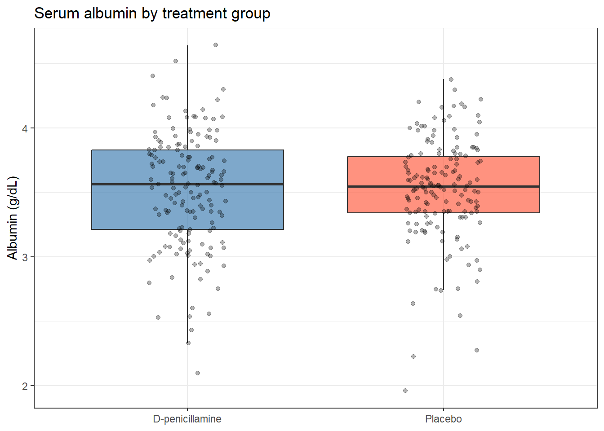
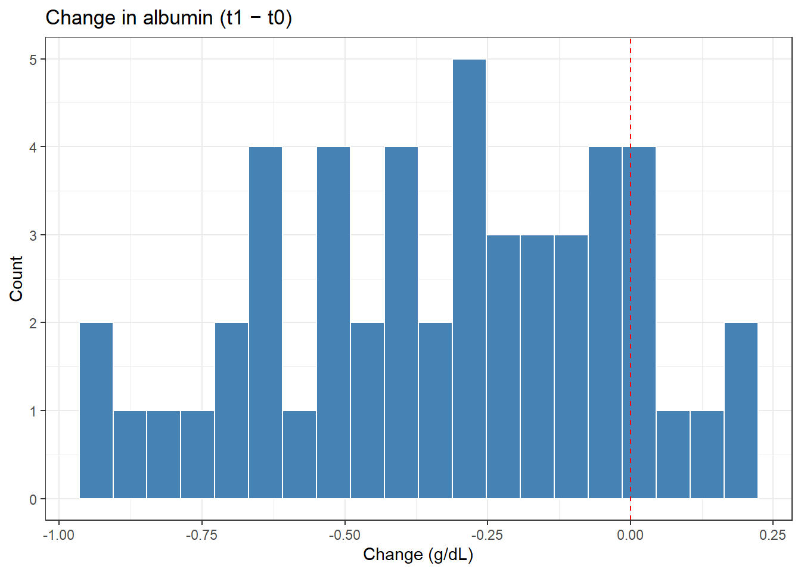
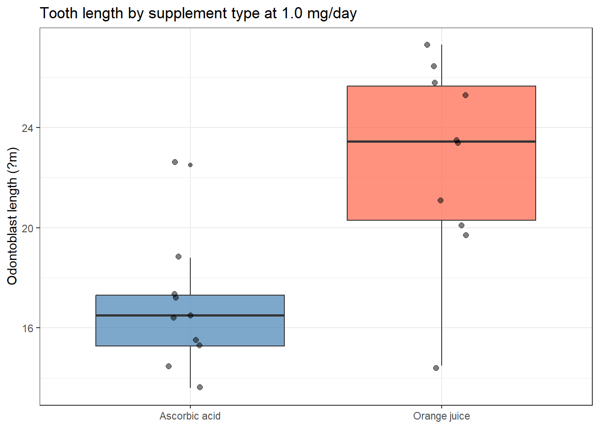
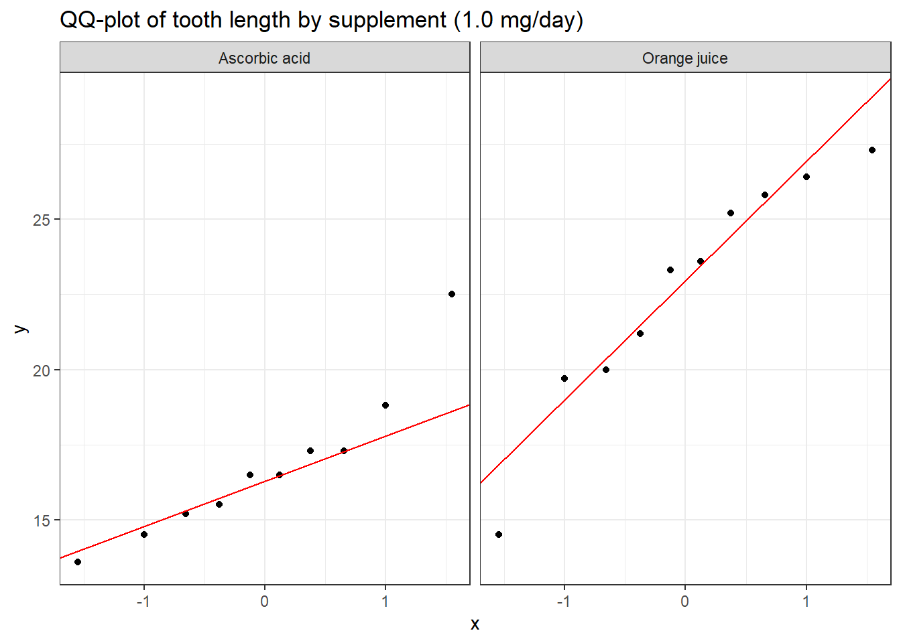
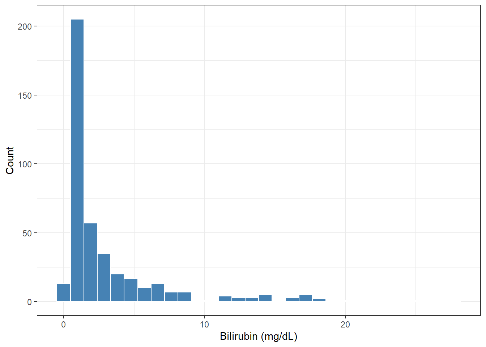
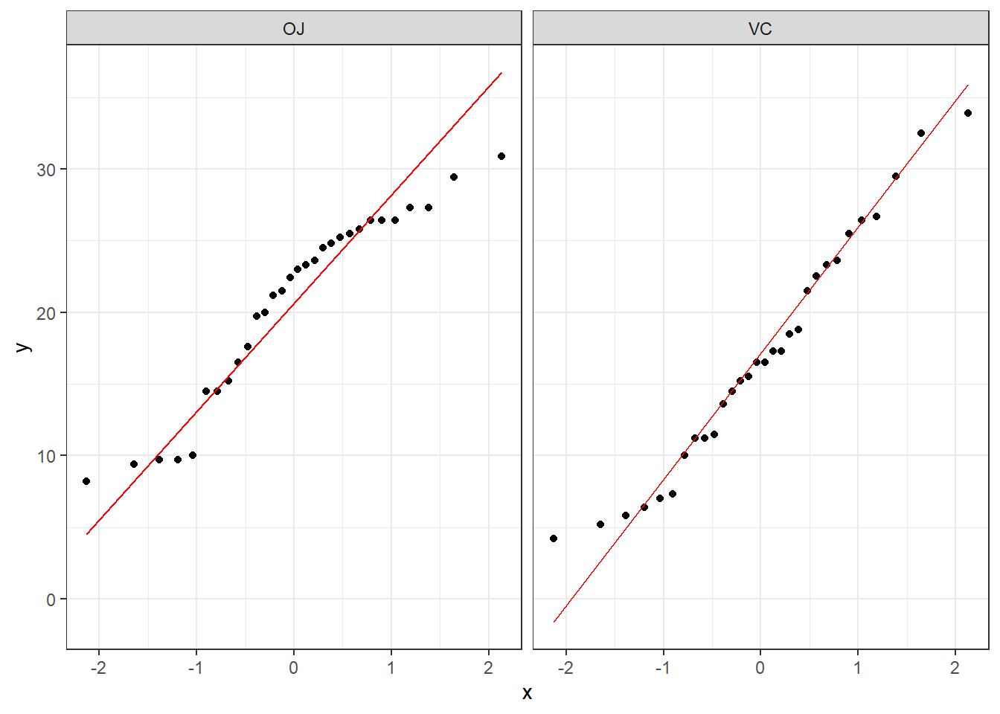

pbc <- survival::pbc %>%
as_tibble() %>%
janitor::clean_names() %>%
mutate(
sex = factor(sex, levels = c("f", "m"), labels = c("Female", "Male")),
trt = factor(trt, levels = c(1, 2), labels = c("D-penicillamine", "Placebo"))
)11 T-tests and Group Comparisons
11.1 When Do You Use This?
You measured haemoglobin before and after treatment in 30 patients. Or you measured body weight in 20 control mice and 20 treated mice. A t-test tells you whether the observed difference is larger than you would expect by chance if there were no real effect.
11.2 Learning Objectives
After completing this session you will be able to:
- Choose the right t-test variant (one-sample, two-sample, paired)
- Decide whether to use Welch’s or Student’s t-test
- Check the normality assumption and know when the test is still valid
- Perform all three variants in R and interpret the output
- Report t-test results correctly in a manuscript
11.3 Background: Which t-test?
| Situation | Test | R function |
|---|---|---|
| Compare sample mean to a known value | One-sample t-test | t.test(x, mu = value) |
| Compare means of two independent groups | Two-sample t-test | t.test(y ~ group, data = df) |
| Compare two measurements on the same subjects | Paired t-test | t.test(x, y, paired = TRUE) |
Welch vs Student: Always use Welch’s t-test (default in R: var.equal = FALSE) unless you have a specific reason to assume equal variances. Welch’s test is more robust and the cost in power is negligible.
Normality: The t-test assumes the sampling distribution of the mean is normal, not the raw data. By the CLT, this holds for \(n \geq 30\) even with moderately skewed data. For small samples with heavily skewed data, use a nonparametric test (see Nonparametric Tests).
11.4 Example 1: Clinical Data (PBC)
11.4.1 One-Sample: Is Mean Albumin Below a Clinical Threshold?
Normal serum albumin is = 3.5 g/dL. Is the mean albumin in PBC patients below this threshold?
# H0: mean albumin = 3.5 g/dL
# H1: mean albumin != 3.5 g/dL
t.test(pbc$albumin, mu = 3.5)
One Sample t-test
data: pbc$albumin
t = -0.12315, df = 417, p-value = 0.902
alternative hypothesis: true mean is not equal to 3.5
95 percent confidence interval:
3.456582 3.538299
sample estimates:
mean of x
3.49744 tidy(t.test(pbc$albumin, mu = 3.5))# A tibble: 1 × 8
estimate statistic p.value parameter conf.low conf.high method alternative
<dbl> <dbl> <dbl> <dbl> <dbl> <dbl> <chr> <chr>
1 3.50 -0.123 0.902 417 3.46 3.54 One Sampl… two.sided broom::tidy() extracts the key numbers into a data frame, useful for piping into tables or inline reporting.
11.4.2 Two-Sample: Does Albumin Differ Between Treatment Groups?
pbc_rand <- pbc %>% filter(!is.na(trt), !is.na(albumin))
# Visualise first
pbc_rand %>%
ggplot(aes(x = trt, y = albumin, fill = trt)) +
geom_boxplot(alpha = 0.7, outlier.shape = NA) +
geom_jitter(width = 0.15, alpha = 0.3, size = 1.5) +
scale_fill_manual(values = c("steelblue", "tomato")) +
labs(title = "Serum albumin by treatment group",
x = NULL, y = "Albumin (g/dL)") +
theme_bw() + theme(legend.position = "none")
t_res <- t.test(albumin ~ trt, data = pbc_rand, var.equal = FALSE)
tidy(t_res)# A tibble: 1 × 10
estimate estimate1 estimate2 statistic p.value parameter conf.low conf.high
<dbl> <dbl> <dbl> <dbl> <dbl> <dbl> <dbl> <dbl>
1 -0.00757 3.52 3.52 -0.159 0.874 308. -0.101 0.0860
# ℹ 2 more variables: method <chr>, alternative <chr>
Reading the t-test Output � Line by Line
When you run t.test(), R prints several pieces of information. Here is what each one means, using the one-sample albumin test as a reference:
One Sample t-test
t = -3.12, df = 417, p-value = 0.0019
alternative hypothesis: true mean is not equal to 3.5
95 percent confidence interval: 3.39 3.47
sample estimates: mean of x = 3.43| Output | What it means |
|---|---|
| t = -3.12 | The test statistic: how many standard errors the sample mean is from the null value (3.5). Negative means the sample mean is below 3.5. |
| df = 417 | Degrees of freedom � roughly the sample size minus 1. Larger df = more reliable t distribution approximation. |
| p-value = 0.0019 | If the true mean were 3.5, there is a 0.19% chance of observing a sample mean this far from 3.5 just by chance. Since p < 0.05, we reject H0. |
| 95% confidence interval: 3.39 to 3.47 | We are 95% confident the true mean albumin in this population lies between 3.39 and 3.47 g/dL. It does not include 3.5 � consistent with the significant p-value. |
| mean of x = 3.43 | The observed sample mean � the point estimate you report. |
For the two-sample test, tidy(t_res) gives you: estimate (the mean difference), conf.low/conf.high (95% CI for the difference), and p.value. Always report the mean difference and CI � not just the p-value.
What Does This Actually Tell Us?
Translate the numbers into a sentence before you report:
“Mean albumin was 3.43 g/dL in PBC patients (95% CI: 3.39�3.47), significantly below the clinical threshold of 3.5 g/dL (one-sample Welch t-test: t = -3.12, df = 417, p = 0.002). The difference of -0.07 g/dL is statistically significant but modest in magnitude.”
Note: always ask yourself whether the difference is clinically meaningful, not just statistically significant. A 0.07 g/dL difference in albumin in a study of 418 patients may be real but irrelevant to treatment decisions.
Reporting: “Mean albumin was 3.52 g/dL in the D-penicillamine group and 3.52 g/dL in the placebo group. There was no statistically significant difference (Welch’s two-sample t-test: t = [value], df = [df], p = [p]; 95% CI for difference: [CI]).”
11.4.3 Paired: Change in Albumin Before and After (Hypothetical)
In a paired design, each subject provides two measurements (e.g., baseline and follow-up). We need the difference per subject, not the group means.
# Simulate: 50 patients with paired albumin measurements
set.seed(2024)
paired_dat <- tibble(
patient = 1:50,
albumin_t0 = rnorm(50, mean = 3.5, sd = 0.5),
albumin_t1 = albumin_t0 + rnorm(50, mean = -0.3, sd = 0.3) # slight decline
)
# Visualise the paired differences
paired_dat %>%
mutate(diff = albumin_t1 - albumin_t0) %>%
ggplot(aes(x = diff)) +
geom_histogram(bins = 20, fill = "steelblue", color = "white") +
geom_vline(xintercept = 0, linetype = "dashed", color = "red") +
labs(title = "Change in albumin (t1 - t0)",
x = "Change (g/dL)", y = "Count") +
theme_bw()
t.test(paired_dat$albumin_t1, paired_dat$albumin_t0, paired = TRUE)
Paired t-test
data: paired_dat$albumin_t1 and paired_dat$albumin_t0
t = -7.8002, df = 49, p-value = 3.866e-10
alternative hypothesis: true mean difference is not equal to 0
95 percent confidence interval:
-0.4128532 -0.2437028
sample estimates:
mean difference
-0.328278 The paired t-test reduces variability by removing between-patient differences, making it more powerful than a two-sample test for this design.
11.5 Example 2: Animal Data (ToothGrowth)
The ToothGrowth dataset compares two Vitamin C delivery methods in guinea pigs.
tg <- ToothGrowth %>%
as_tibble() %>%
mutate(
supp = factor(supp, levels = c("VC", "OJ"),
labels = c("Ascorbic acid", "Orange juice")),
dose = factor(dose)
)
# Compare at the 1.0 mg/day dose only
tg_1mg <- tg %>% filter(dose == "1")
tg_1mg %>%
ggplot(aes(x = supp, y = len, fill = supp)) +
geom_boxplot(alpha = 0.7) +
geom_jitter(width = 0.1, alpha = 0.5, size = 2) +
scale_fill_manual(values = c("steelblue", "tomato")) +
labs(title = "Tooth length by supplement type at 1.0 mg/day",
x = NULL, y = "Odontoblast length (?m)") +
theme_bw() + theme(legend.position = "none")
tidy(t.test(len ~ supp, data = tg_1mg, var.equal = FALSE))# A tibble: 1 × 10
estimate estimate1 estimate2 statistic p.value parameter conf.low conf.high
<dbl> <dbl> <dbl> <dbl> <dbl> <dbl> <dbl> <dbl>
1 -5.93 16.8 22.7 -4.03 0.00104 15.4 -9.06 -2.80
# ℹ 2 more variables: method <chr>, alternative <chr>11.6 Checking Assumptions: QQ-plots
For small samples (\(n < 30\)), check that data are approximately normal using a QQ-plot.
pbc_rand %>%
ggplot(aes(sample = albumin)) +
stat_qq() +
stat_qq_line(color = "red") +
facet_wrap(~ trt) +
labs(title = "QQ-plot of albumin by treatment group") +
theme_bw()
Points falling close to the diagonal line indicate approximate normality. With \(n \approx 150\) per group, slight deviations are not a concern for the t-test.
11.7 Where to Find Data Like This
PBC dataset: survival::pbc ? built in, no download needed.
Sleep dataset (paired): datasets::sleep ? built into base R. Contains the effect of two sleep drugs on 10 patients (classic paired t-test example).
MASS::birthwt: birth weight data with clinical predictors; good for comparing birth weight between groups.
data(birthwt, package = "MASS")
t.test(bwt ~ smoke, data = birthwt)11.8 What Can Go Wrong
Using a paired test when data are independent (or vice versa) The paired t-test requires one-to-one matching. If you use it on independent group data, you will get wrong degrees of freedom and an incorrect p-value.
Testing normality with a formal test Shapiro-Wilk (shapiro.test()) is not a reliable guide for choosing a t-test. With small samples it has low power; with large samples it rejects normality for trivially small deviations. Use a QQ-plot and think about the biology instead.
Reporting only the p-value Always report the mean difference and 95% CI alongside the p-value. “p = 0.03” tells the reader almost nothing about the size or direction of the effect.
Not accounting for unequal variances If the two groups have very different standard deviations, Welch’s t-test (default in R) is the right choice. Using var.equal = TRUE when variances differ inflates the Type I error rate.
Common Misinterpretations � Don’t Make These Mistakes
“p = 0.04 means the difference is large” No. With 400 patients, even a 0.05 g/dL difference (clinically trivial) can produce p = 0.04. Always report the mean difference and confidence interval so the reader can judge clinical relevance.
“p = 0.07 means the groups are the same” No. It means your sample did not provide enough evidence to rule out chance at a = 0.05. With only 20 patients this may simply mean the study was underpowered. Never conclude “no difference” from a non-significant p-value alone.
“I should use a one-sided test to get a smaller p-value” Only use a one-sided test if you genuinely predicted the direction of the effect before collecting data. Using a one-sided test because the data happened to go the right way is p-hacking and gives a false sense of significance.
“The paired t-test always gives a lower p-value” The paired test is more powerful only when the within-subject measurements are correlated (e.g., before/after on the same patient). If your data are truly independent, using a paired test is wrong, not more powerful.
“t-tests require normally distributed data” Not exactly. The t-test requires that the sampling distribution of the mean is approximately normal. By the Central Limit Theorem, this holds for n = 30 even with skewed data. For very small samples with obviously non-normal data, use a nonparametric test instead.
11.9 Exercises
11.9.1 Exercise 1 (Guided): One-Sample Test for Bilirubin
The upper limit of normal for bilirubin is about 1.2 mg/dL.
- Plot the bilirubin distribution. Is it normal?
- Log-transform bilirubin. Test whether mean log-bilirubin equals
log(1.2). - Report: mean, 95% CI, t-statistic, df, p-value, and a one-sentence interpretation.
Exercise 1: Solution
# 1. Distribution
ggplot(pbc, aes(x = bili)) +
geom_histogram(bins = 30, fill = "steelblue", color = "white") +
labs(x = "Bilirubin (mg/dL)", y = "Count") + theme_bw()
# 2. One-sample test on log scale
res <- t.test(log(pbc$bili), mu = log(1.2))
tidy(res)# A tibble: 1 × 8
estimate statistic p.value parameter conf.low conf.high method alternative
<dbl> <dbl> <dbl> <dbl> <dbl> <dbl> <chr> <chr>
1 0.571 7.77 6.10e-14 417 0.473 0.670 One Samp… two.sided # 3. Back-transform the CI
exp(res$conf.int)[1] 1.604900 1.954091
attr(,"conf.level")
[1] 0.95The geometric mean bilirubin is well above 1.2 mg/dL (the upper limit of normal), and this difference is highly statistically significant (p << 0.001). This confirms that PBC patients have elevated bilirubin, consistent with cholestatic liver disease.
11.9.2 Exercise 2 (Semi-guided): Two-Sample Comparison
Using ToothGrowth, test whether tooth length differs by supplement type across all dose levels (not just 1 mg/day).
- Run a two-sample Welch’s t-test.
- Is the test valid? Check sample sizes and a QQ-plot.
- Run the test also on log-transformed tooth length. Do the conclusions differ?
Exercise 2: Solution
tg_all <- ToothGrowth %>%
as_tibble() %>%
mutate(supp = factor(supp))
# Two-sample test
tidy(t.test(len ~ supp, data = tg_all))# A tibble: 1 × 10
estimate estimate1 estimate2 statistic p.value parameter conf.low conf.high
<dbl> <dbl> <dbl> <dbl> <dbl> <dbl> <dbl> <dbl>
1 3.7 20.7 17.0 1.92 0.0606 55.3 -0.171 7.57
# ℹ 2 more variables: method <chr>, alternative <chr># QQ-plot by group
tg_all %>%
ggplot(aes(sample = len)) +
stat_qq() + stat_qq_line(color = "red") +
facet_wrap(~ supp) + theme_bw()
# Log scale
tidy(t.test(log(len) ~ supp, data = tg_all))# A tibble: 1 × 10
estimate estimate1 estimate2 statistic p.value parameter conf.low conf.high
<dbl> <dbl> <dbl> <dbl> <dbl> <dbl> <dbl> <dbl>
1 0.272 2.97 2.69 2.17 0.0348 51.0 0.0202 0.524
# ℹ 2 more variables: method <chr>, alternative <chr>With 30 observations per group, the CLT applies. The QQ-plot shows approximate normality. The raw and log-transformed tests give similar conclusions.
11.9.3 Exercise 3 (Open-ended)
Use a dataset from your own research. Identify a comparison where a t-test is appropriate. Run the test, check assumptions, and write a Methods + Results paragraph as you would for a journal submission.
11.10 Comprehension Check
- What is the difference between a one-sample, two-sample, and paired t-test? Give a biomedical example for each.
- When should you use Welch’s t-test instead of Student’s t-test?
- A QQ-plot of your data shows points diverging from the line at the upper tail. The sample size is n = 12. What should you do?
- You run a two-sample t-test and get p = 0.04, 95% CI for difference: (0.01 g/dL to 2.1 g/dL). Is this a convincing result? What would you report?
- A colleague says “I tested normality with Shapiro-Wilk (p = 0.06) so the data are normal.” What is wrong with this reasoning?
Answers
- One-sample: compare a sample mean to a known or hypothetical value (e.g., “Is mean haemoglobin in my patients below 12 g/dL?”). Two-sample: compare means of two independent groups (e.g., “Does albumin differ between treatment and control mice?”). Paired: compare two measurements on the same subjects (e.g., “Did blood pressure change from baseline to 6 weeks?”).
- Use Welch’s when the two groups may have different population variances. It is the default in R (
var.equal = FALSE) and is almost always appropriate. Student’s t-test (equal variance assumed) is rarely preferred. - With n = 12 and non-normality, use a nonparametric Wilcoxon test (see next session) instead of a t-test.
- The result is statistically significant (p = 0.04) and the 95% CI excludes zero (0.01 to 2.1 g/dL), but the CI is very wide. The true difference could be as small as 0.01 g/dL (negligible) or as large as 2.1 g/dL (potentially important). The p-value alone tells you almost nothing useful here � the CI is the critical information. Always report both, and note that a barely significant result with a wide CI is actually uninformative about effect size.
- Shapiro-Wilk with p = 0.06 is not evidence that data are normal; it means you failed to detect non-normality at the 5% level. With n = 12, the test has low power and would miss moderate non-normality. Use a QQ-plot and domain knowledge instead.
11.11 Further Reading
- Welch (1947) — Original Welch t-test paper
- Bland (2015) — Chapter on t-tests in An Introduction to Medical Statistics
?t.testin R ? the help page has a detailed description of all options
Bland, Martin. 2015. An Introduction to Medical Statistics. 4th ed. Oxford University Press.
Welch, B. L. 1947. “The Generalization of ’Student’s’ Problem When Several Different Population Variances Are Involved.” Biometrika 34 (1–2): 28–35.